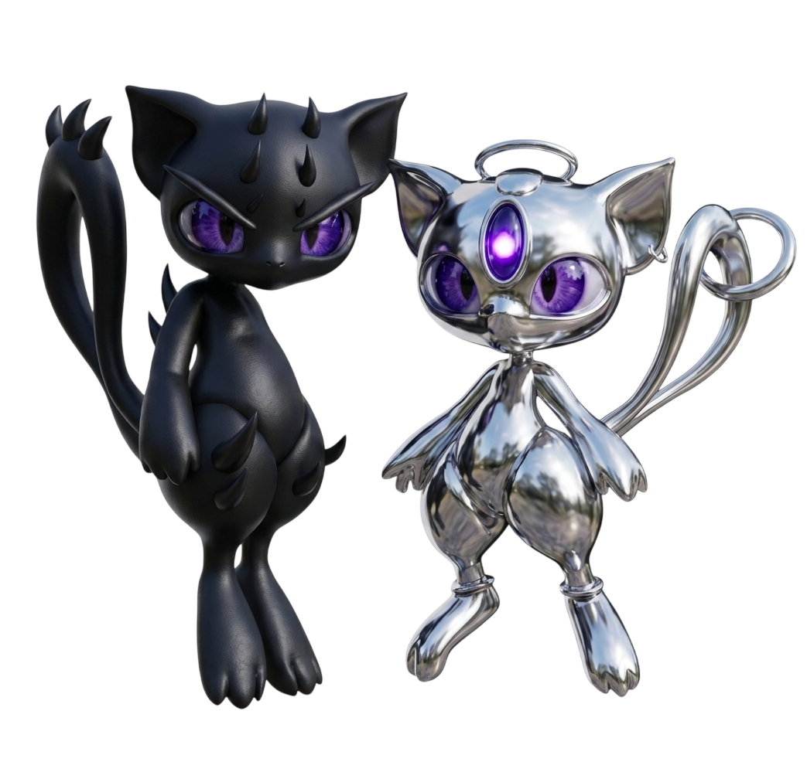
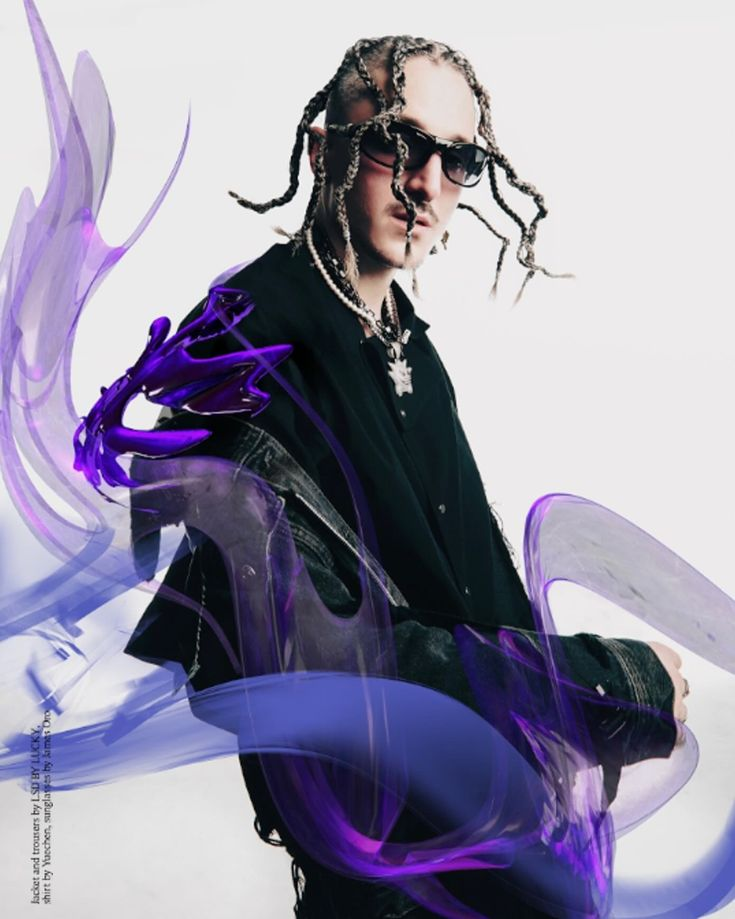
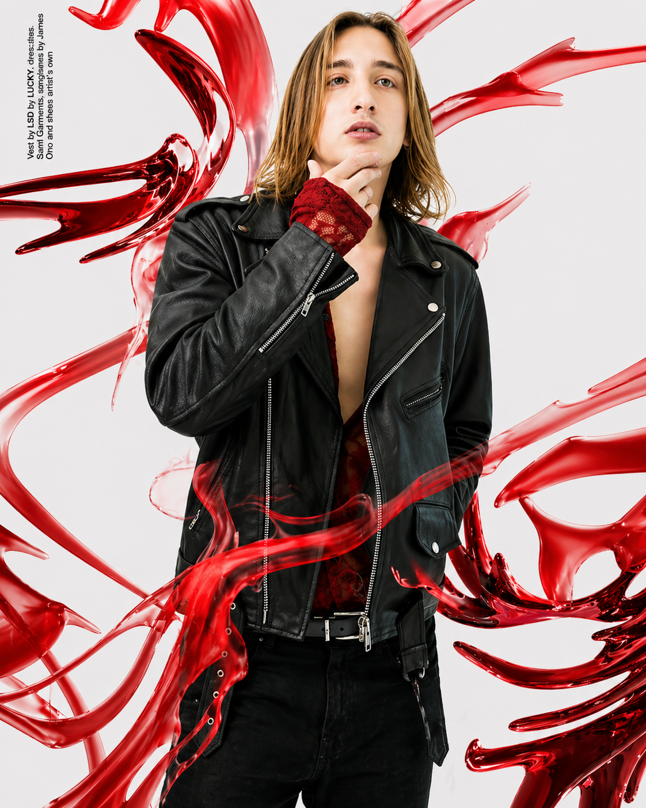
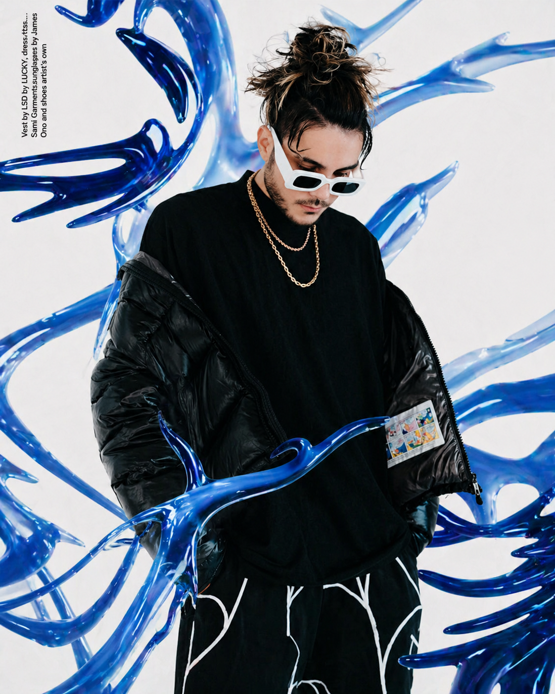
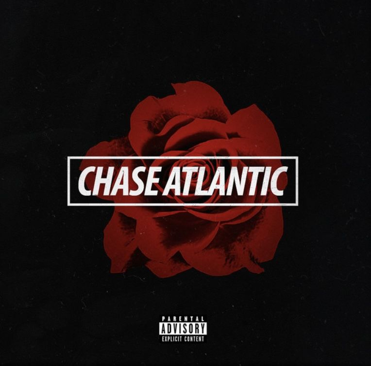
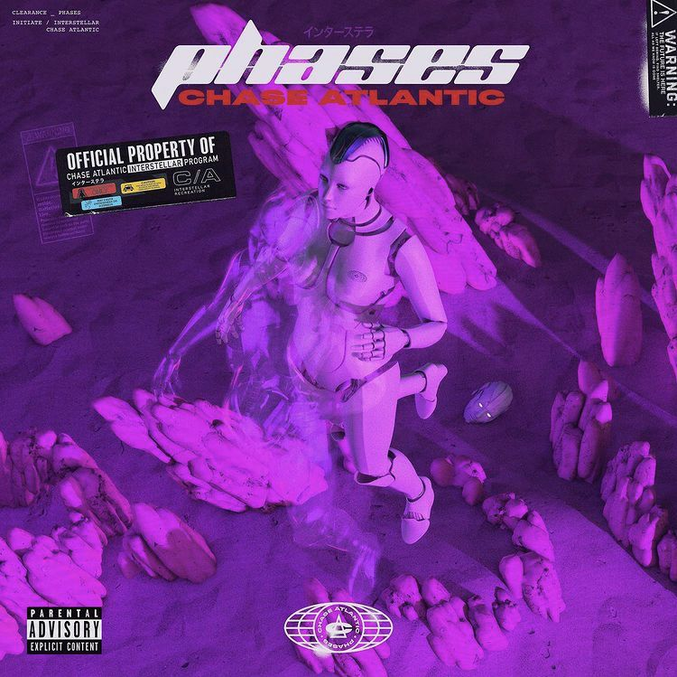
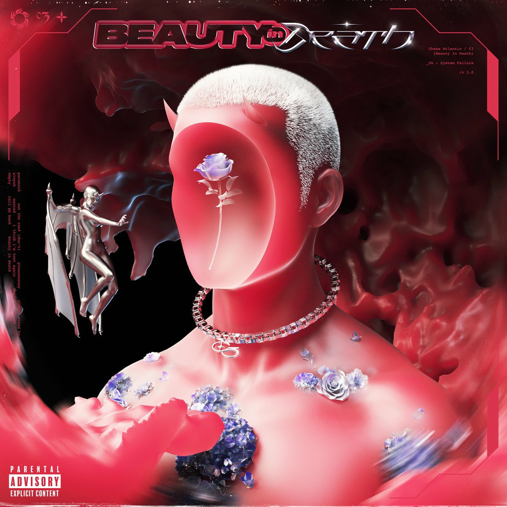
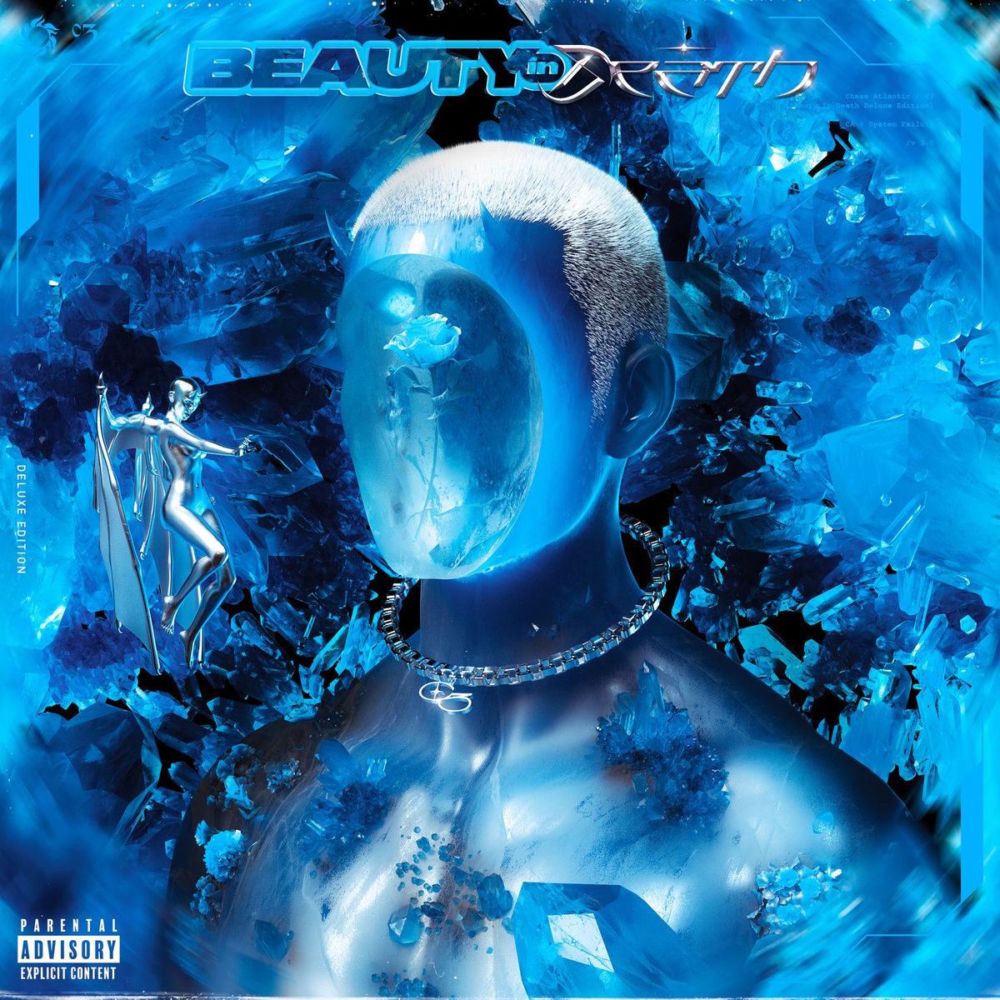
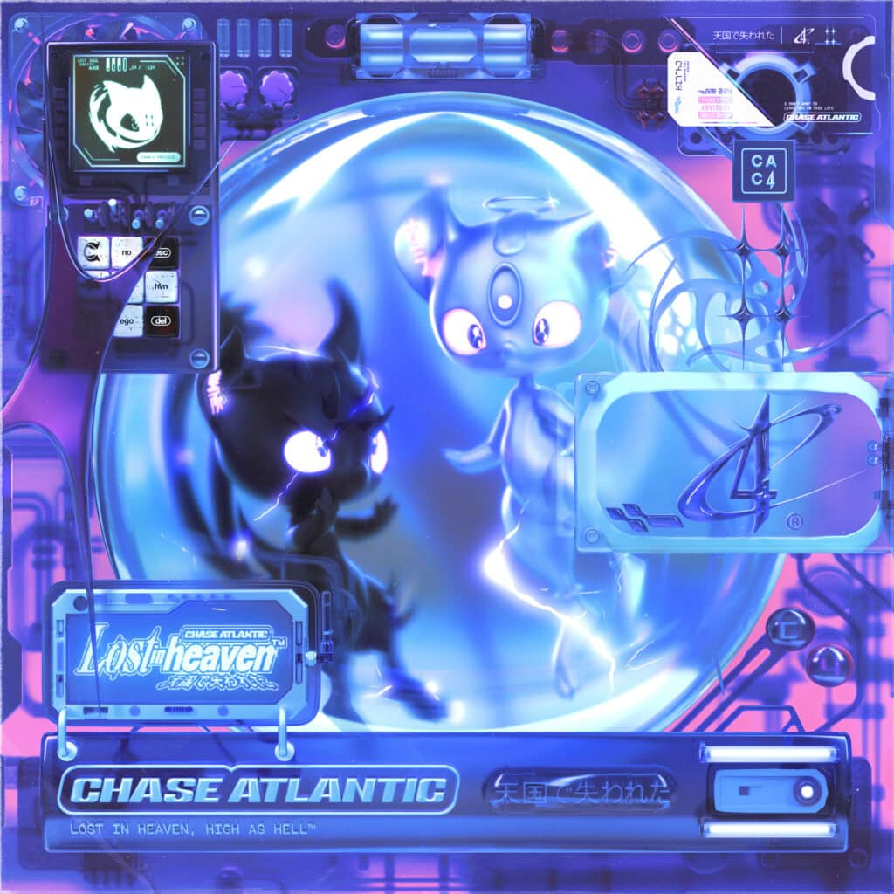
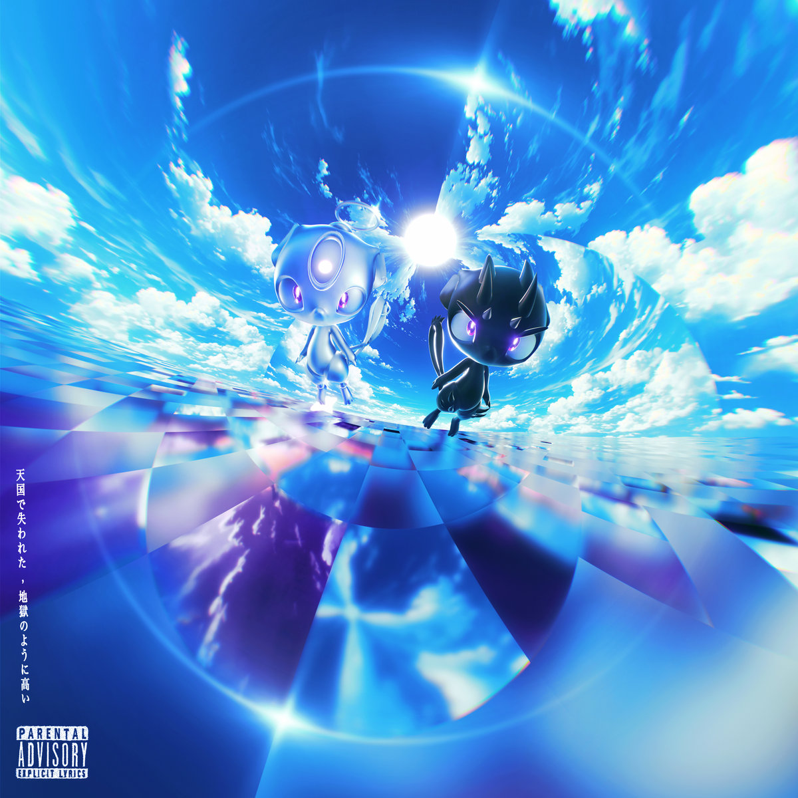

EL ARCHIVO OFICIAL DE FANS

Chase Atlantic es un grupo australiano de R&B originario de Cairns, Queensland, formado en 2014. La banda está compuesta por tres miembros principales: Christian Anthony y los hermanos Mitchel y Clinton Cave. Desde su formación han lanzado siete EPs y cuatro álbumes de estudio. Son especialmente reconocidos por su exitoso sencillo de 2017, "Swim".
Christian Anthony y Mitchel Cave formaban parte de una boy band llamada What About Tonight, creada para audicionar en la cuarta temporada de The X Factor Australia, donde obtuvieron el undécimo lugar.
El hermano mayor de Mitchel, Clinton Cave, contaba con un canal en YouTube (ClintonCaveMusic) donde publicaban versiones de canciones. En 2012 lanzaron su primer cover juntos de la canción "Locked Out of Heaven" de Bruno Mars. En 2013 actuaron bajo el nombre de KIDS (Kind Imaginations Destructive Situations) y lanzaron el sencillo "Addicted".
El trío comenzó a grabar bajo el nombre de Chase Atlantic cuando Clinton reclutó a Mitchel y Christian para un proyecto universitario. Según los integrantes, el nombre no tiene un significado específico, sino que surgió de la combinación de dos palabras que les gustaban. El 26 de mayo de 2014 lanzaron oficialmente su primer EP titulado Dalliance.
En 2017, Chase Atlantic firmó con Warner Brothers Records y lanzó la trilogía de EPs Part One, Part Two y Part Three, introduciendo influencias de hip hop y R&B a su sonido. El 7 de octubre publicaron su álbum debut homónimo de catorce canciones. Ese mismo año iniciaron su trayectoria en giras abriendo para Sleeping with Sirens en Estados Unidos y para Blackbear en Australia, además de realizar su primera gira propia como cabezas de cartel con 16 presentaciones en 11 estados.
Durante 2018, la banda se mantuvo en gira constante junto a artistas como Lights y Sleeping with Sirens, participando además en festivales como Bonnaroo, Vans Warped Tour y Reading / Leeds. Tras lanzar los sencillos independientes "Numb to the Feeling" y "Tidal Wave", se desvincularon de Warner Bros. para ser independientes. Posteriormente emprendieron su primera gira mundial como cabezas de cartel acompañados por Cherry Pools, Xavier Mayne y R I L E Y, vendiendo el Paradise EP y presentando temas inéditos como "You Too", "Like a Rockstar" y "Devilish".
En enero de 2019 publicaron el EP Don't Try This, recopilando las canciones inéditas presentadas en su gira anterior. Tras pasar los primeros meses del año trabajando en Los Ángeles, lanzaron los sencillos "HER", "StruckInMyBrain" y "Love is (not) Easy" como antesala de su segundo álbum de estudio, Phases, publicado el 28 de junio. El lanzamiento vino respaldado por la gira Phases Tour: North America durante el verano.
En 2020, la agrupación centró sus esfuerzos en la composición y producción de su tercer álbum de estudio, titulado Beauty in Death, preparando todo el material para su posterior lanzamiento en mayo de 2021.
El 2 de mayo de 2022, la banda lanzó oficialmente la edición de lujo (deluxe) de su álbum Beauty in Death, añadiendo nuevo contenido a este proyecto un año después de su estreno original.

MITCHEL CAVE (2 de diciembre de 1996, Australia) es el vocalista y compositor principal de la banda Chase Atlantic. Tras iniciar su trayectoria musical desde muy joven y pasar por The X Factor, cofundó el grupo junto a su hermano Clinton y Christian Anthony. Pionero en fusionar R&B, rock, pop y hip-hop, lidera una de las agrupaciones alternativas australianas de mayor éxito internacional.

CHRISTIAN ANTHONY (3 de septiembre de 1997, Sídney, Australia) es guitarrista, vocalista y baterista de la banda Chase Atlantic. Cofundador del grupo junto a Mitchel y Clinton Cave, comenzó a ganar reconocimiento tras su paso por la edición 2012 de The X Factor Australia. Fue pieza clave en los primeros proyectos del grupo, como los EPs Dalliance y Nostalgia, contribuyendo al éxito y alcance global de la agrupación.

CLINTON CAVE (4 de julio de 1993, Cairns, Australia) es guitarrista, vocalista, saxofonista y productor de la banda Chase Atlantic. Cofundador del grupo junto a su hermano Mitchel y Christian Anthony, comenzó a darse a conocer a través de su canal de YouTube Clinton Cave Music. Ha sido una pieza clave en la producción del sonido distintivo de la agrupación, destacando en lanzamientos como su exitoso sencillo "Church" (2017) tras su firma con Warner Brothers Records.





